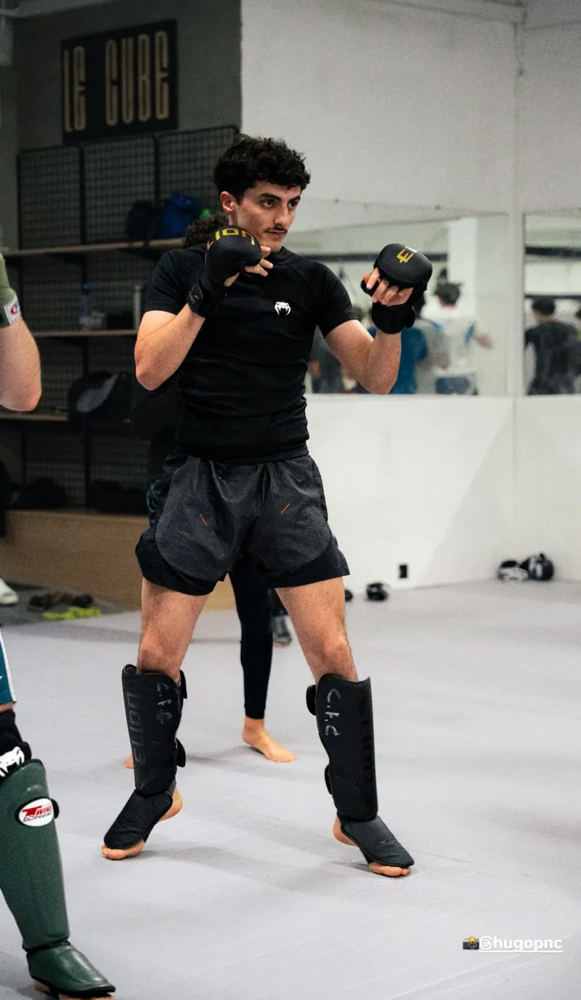
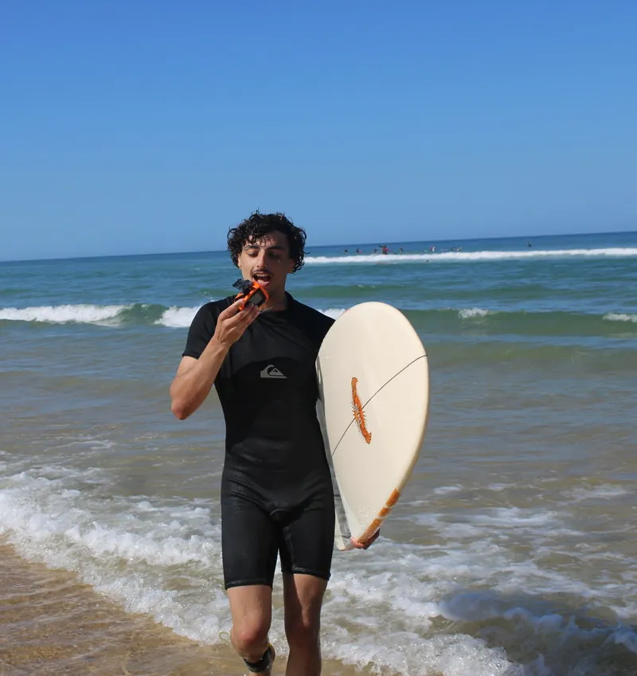

01
Deux sites pour un réseau de cinq cabinets de kiné et deux salles de sport-santé, plus le SEO/GEO suivi mois après mois. Cent pages, 46 articles, une version anglaise complète.
Voir l'étude de cas →2026 → aujourd'hui
Développeur web freelance à Paris, étudiant à l'École 42. Je construis des sites qui chargent vite — et je fais en sorte qu'on les trouve.
Six sites en ligne pour cinq clients : kinés, salles de sport, énergie, e-commerce. HTML, CSS, JavaScript — sans CMS ni framework inutile. Et le référencement qui va avec.
J'ai commencé par une licence de biochimie à Montpellier — paillasses, statistiques, méthode expérimentale. Ce que j'en garde, c'est l'habitude d'observer avant de conclure et de mesurer avant d'affirmer.
Puis l'École 42 à Paris, où je suis aujourd'hui étudiant. En parallèle, j'apprends le métier en le faisant : des sites livrés à de vrais clients, mis en ligne, et suivis une fois en ligne.
Ce que je fais tient en deux choses : construire des sites rapides en HTML, CSS et JavaScript, sans CMS ni framework inutile — et faire en sorte qu'on les trouve, sur Google comme dans les réponses des IA.
La liste honnête : ce qui tourne aujourd'hui sur des sites clients en production, et ce que je propose sans l'avoir encore facturé — c'est écrit noir sur blanc. Rien d'ajouté pour faire bien sur un CV.
Deux sites pour un réseau de cinq cabinets de kiné et deux salles de sport-santé, plus le SEO/GEO suivi mois après mois. Cent pages, 46 articles, une version anglaise complète.
Voir l'étude de cas →Site vitrine dessiné comme un plan technique, avec un simulateur en 7 écrans qui redessine une coupe du logement en SVG à chaque réponse et sort un prix avant tout appel.
Voir l'étude de cas →Site et SEO/GEO d'un installateur RGE, écrit à contre-courant du démarchage : pas de grille de prix, une prime supprimée annoncée en page d'accueil, 65 guides.
Voir l'étude de cas →Site et SEO local d'un bureau d'études thermiques : une échelle DPE qui grimpe de G vers A au fil du défilement, un simulateur en 9 étapes, cinq villes couvertes.
Voir l'étude de cas →Création du site, du design et du catalogue Shopify pour deux fondatrices italiennes venues de la mode. Huit sections Liquid écrites sur mesure pour deux références.
Voir l'étude de cas →Le CRM maison qui sert à créer et piloter les études consommateurs : collecte automatisée, nettoyage des données brutes, LLM intégrés au workflow d'analyse.
Voir l'étude de cas →Trois pratiques qui structurent mon temps en dehors du clavier — discipline, stratégie et lâcher-prise. Elles déteignent forcément un peu sur la manière dont je travaille.


Une page propre, prête à imprimer ou à transmettre. Mise à jour fin 2026.
↓ Télécharger le CVUn site à construire, un référencement à reprendre, ou simplement une question technique : je réponds vite, et toujours en personne.
M'écrire un mot →